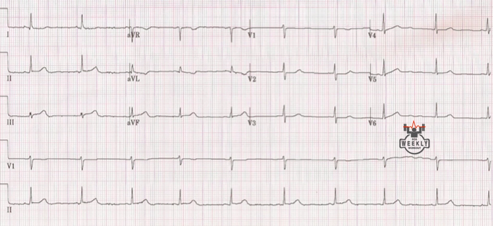
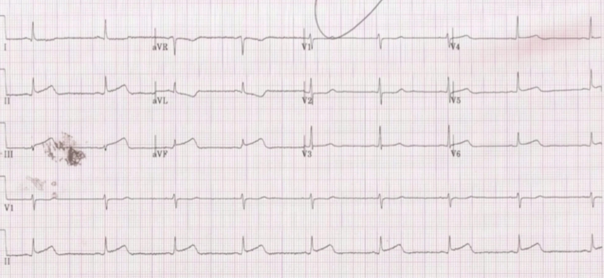

KATEGORIE 1: No-Brainer
In der ersten Kategorie finden sich EKG-Auffälligkeiten, die ohne gezielte Suche schon bei der ersten Analyse auffallen sollten.
Fall 1
Eine 56-jährige Patientin wird mit Brustschmerzen in das University Medical Center New Orleans eingeliefert. Während des Transports ist sie einmalig synkopiert. Bekannt sind eine arterielle Hypertonie und eine Hyperlipidämie, sie ist Raucherin und die Familienanamnese ist positiv für kardiale Erkrankungen.
EKG

Die Notaufnahme wollte das Herzkatheterlabor aktivieren, die Kardiologen lehnten jedoch ab, da das EKG nicht diagnostisch sei. Da das initiale Troponin negativ, die Ableitung aVL aber auffällig war, wurden engmaschig Wiederholungs-EKGs geschrieben.
EKG 2h später

Myokardinfarkt
Die häufigste Ursache eines Myokardinfarktes ist eine atherosklerotische Plaqueruptur mit nachfolgender Thrombosierung, die zu einem Verschluss einer Koronararterie führt.
Die Plaqueruptur ist die häufigste Ursache, allerdings gibt es noch weitere: koronare Thromboembolie, Koronarspasmen, Plaqueerosion, SCAD,
Takotsubo-Kardiomyopathie etc.; betrifft vor allem junge Patienten! Akut ischämisches und später vernarbtes Myokard begünstigen die Entstehung von Rhythmusstörungen.
Die STEMI-/OMI-Kriterien sind mittlerweile sehr umfangreich und mit wachsender Studienlage kommen laufend neue hinzu. Daher folgt hier nur ein kurzer Überblick über relevante EKG-Merkmale:
- Klassische STEMI-Kriterien
- Posteriorer OMI
- de-Winter-T-Wellen
- Sgarbossa-Kriterien
- Shark-Fin-Zeichen
- Hyperakute T-Wellen
- Reziproke VeränderungenWie im oben beschriebenen Fall ist eine Veränderung in aVL oft das erste Warnsignal für einen bevorstehenden inferioren STEMI (II, III, aVF)
- Aslanger-Zeichen
- Südafrikanisches Flaggen-Zeichen
- und vieles mehr ...